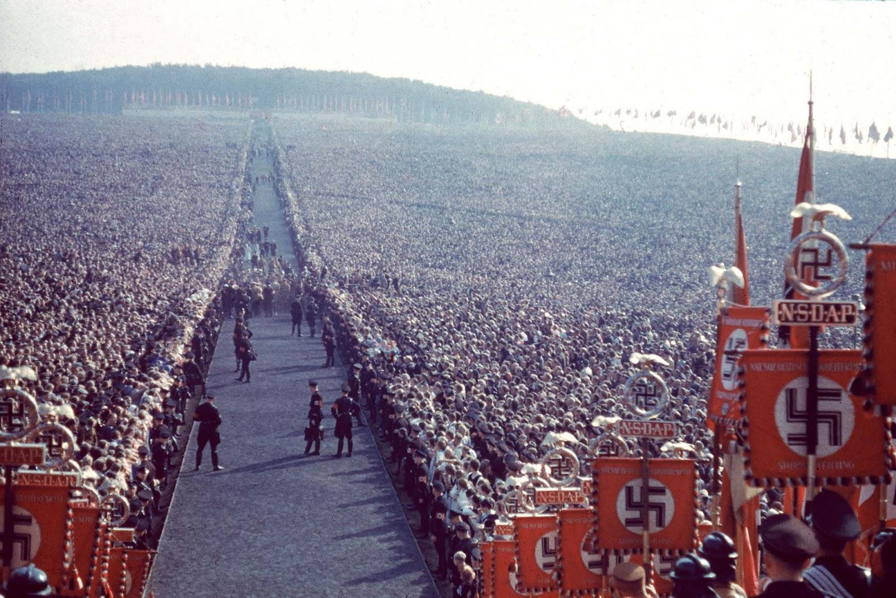

Третият райх е наследник на Ваймарската република. Ваймарската република е създадена след загубата на Германия на през Първата световна война. Тя е една разпокъсана и слаба държава, с парламентарна демокрация, която не може да се бори както с външните, така и с вътрешните врагове. Разяждана от политически борби и непосилните репарации към победителите от ПСВ, Ваймарската република е обречена на колапс и с нея и целият германския народ. Инфлацията достига безпрецедентни нива - един хляб струва 200 милиарда марки. Има над 200 хиляд самоубийства годишно. Над 7 милиона безработни. Из цял Берлин се шири невиждана проституция и дегенерация. Богати евреите печелят на гърба на германския народ. И тогава Адолф Хитлер става канцлер...
С избирането на Адолф Хитлер за канцлер на Германия веднага започва възстановителната работа. В рамките на 3 години връща всички безработни на работа. Започва мащабни строителни проекти из цяла Германия. Прочутите из цял свят Аутобаните са строени по това време. Създадена е нова парична система, независима от международните еврейски банкери.